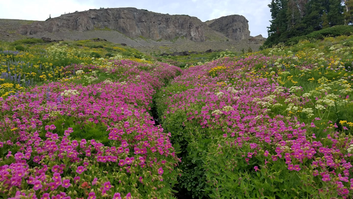

The Teton Crest Trail is an awe-inspiring 40-mile hike along the Grand Teton range in western Wyoming. The trail extends from Phillips Pass on the border of the Bridger Teton National Forest and proceeds north to String Lake in Grand Teton National Park.
You can access the Teton Crest Trail from the Granite Canyon Trail or from the aerial tramway in Jackson Hole, which provides a gradual ascent to the Teton range. There are several access trails adjacent from national forest lands of varying degrees of difficulty.
Along the trail, enjoy an exicting traverse of the Death Canyon Shelf with a difficult climb over Mount Meek Pass, Hurrican Pass, and the Paintbrush Divide. This is a challenging 3- to 4-day trip, so you must pack sufficient supplies and a water purifier. The Teton Crest Trail goes through grizzly bear country, so bear spray is a must.